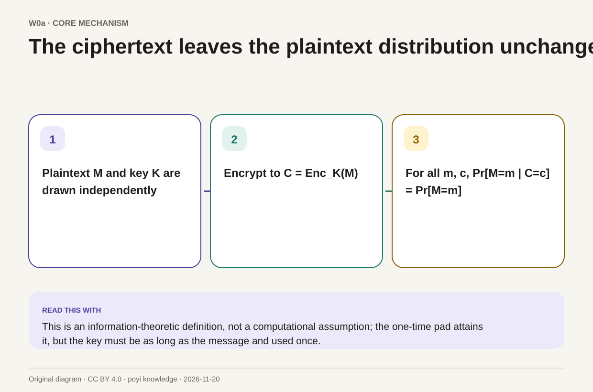
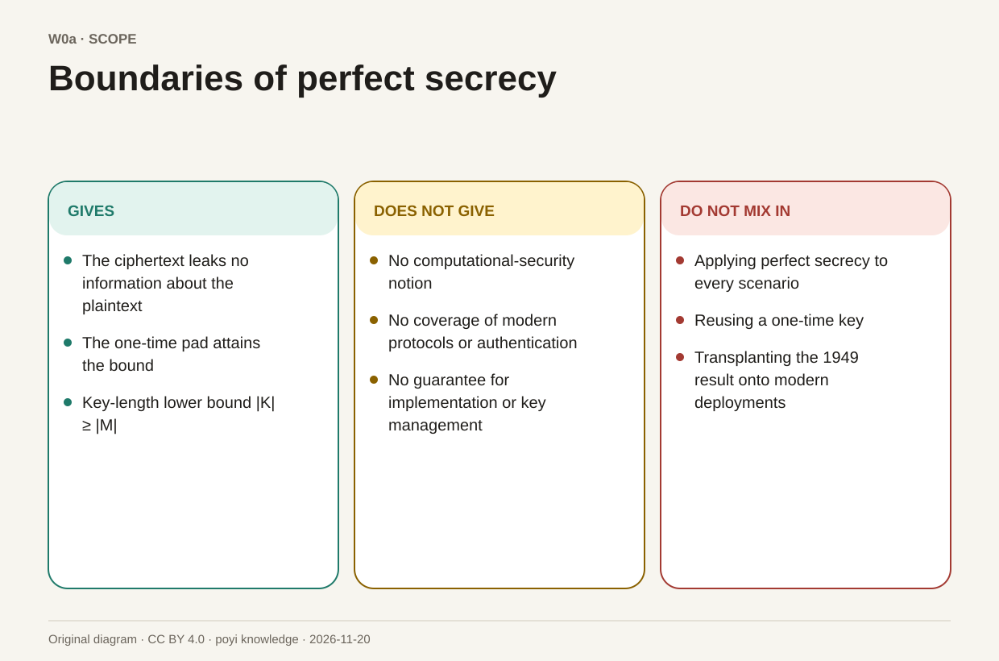

Principles
Theorem: Shannon's Perfect Secrecy Theorem (香农完美保密定理). Perfect secrecy means one thing: the ciphertext tells you nothing about the plaintext. In 1949 Shannon gave that sentence a rigorous mathematical definition, and proved that only the one-time pad can reach it — at the price of a key as long as the message.
Set the stage. A secrecy system has a plaintext space M, a key space K and a ciphertext space C. The key k is drawn independently of the plaintext m (that assumption is not optional), the encryption algorithm Enc_k maps plaintext to ciphertext, and Dec_k maps back. Definition (perfect secrecy): for every plaintext distribution, every plaintext m and every ciphertext c,
P(M = m | C = c) = P(M = m)
Seeing the ciphertext changes nothing about your beliefs. An equivalent formulation is Shannon's own: for any two plaintexts m1 and m2, encrypting them under the same key must yield any given ciphertext with the same probability (Pr_k[Enc_k(m1) = c] = Pr_k[Enc_k(m2) = c]). Chinese textbooks often write this as C(K) = C(P): the statistical distribution of ciphertexts does not depend on the plaintext, and the key may redistribute plaintexts onto ciphertexts any way it likes — any redistribution, as long as it carries no information about the message itself. In information-theoretic language it is mutual information I(M; C) = 0, equivalently H(M|C) = H(M). Shannon proved in 1949 that these formulations are equivalent, which is why they get used interchangeably. Theorem 1 (the one-time pad achieves the bound): take M = K = C = {0,1}^n, Enc_k(m) = m ⊕ k, with k uniform on K. Each ciphertext c corresponds to exactly one key (k = c ⊕ m), so Pr[C = c] = 2^{-n} regardless of m, and P(M = m | C = c) = P(M = m) holds. Theorem 2 (the bound, Shannon's bound): any perfectly secret system satisfies |K| ≥ |M| (in entropy form, H(K) ≥ H(M)). The proof by contradiction is short: suppose there are fewer keys than plaintexts. Fix a ciphertext c that can occur. Decrypting it under every key yields at most |K| distinct plaintexts, so when |K| < |M| some plaintext m* can never produce c. Then P(M = m* | C = c) = 0 while P(M = m*) > 0, and the definition breaks. In other words: the key must be at least as long as the message. That is not engineering advice, it is a mathematical necessity.
Theorem 3 (uniqueness): the structure of a perfectly secret system is completely pinned down. For every key k, Enc_k must be a bijection from M to C (otherwise one ciphertext decrypts to two plaintexts and the argument above applies), and each ciphertext c must correspond to exactly |K| plaintext-key pairs. When |K| = |M|, this says that every message gets its own random string, as long as the message itself — that is the one-time pad. Strictly speaking, every perfectly secret system is a one-time pad plus a fixed, key-independent relabelling, so "the OTP is the only solution" holds up to that equivalence, not literally. Finally, the quantifiers. The conclusion holds for all plaintext distributions, all key distributions independent of the message, and all adversaries — unbounded computing power, unlimited time, a quantum computer, an attacker who is also the cryptographer. That is information-theoretic security, also called unconditional security.

Why it matters
Because it handed cryptography an absolute ruler. Before this theorem, the word "secure" had no mathematical content.
Before it, people said a cipher was "strong enough" on the strength of testing, experience and the designer's own reputation. Shannon turned security from a feeling into a provable bound: he gave a definition, he gave the ceiling that definition allows, and he proved that everything beyond that ceiling is wasted effort.
It directly determined two trajectories:
- It explained why the one-time pad is mathematically unimpeachable and practically unusable. The key has to be as long as the message, and that single fact locks out almost every scenario — how do you distribute, store and destroy a key that size? 2. It forced the escape route of "computational security". If you allow the attacker's computing power to be finite, you can trade a much shorter key for "too expensive to break". Diffie and Hellman stated the trade-off bluntly in 1976: a system is secure either because breaking it costs too much (computationally secure) or because no amount of computing breaks it (unconditionally secure). Modern cryptography is almost entirely built on the first road.
It is also the coordinate origin for everything that came later. What Goldwasser and Micali did in 1982 is, reduced to one sentence: swap "zero information" for "computationally zero information". Shannon said the mutual information between ciphertext and plaintext must be zero; they said it may be non-zero as long as nobody can compute it out of it. Semantic security, IND-CPA, IND-CCA, non-malleability, UC security — all of them are later generations of the computational version of this theorem.
And look one level deeper: every "provably secure" paper today ends up reducing to some hardness assumption (factoring, discrete logarithms, lattice problems). Those assumptions are defensible precisely because Shannon showed that if you cannot stay secret even with a key as long as the message, then any cheaper scheme must lean on some specific mathematical difficulty. That lower bound is the licence on which all assumption-based security operates.
Applications
No mainstream system today claims perfect secrecy, but the theorem's ideas live on in several distinct forms.
One: it really was deployed, and for a long time. In 1917 Gilbert Vernam at AT&T came up with the idea of adding two punched paper tapes modulo 2, and patented it in 1919 — the "one-time tape". The US military turned it into the SIGTOT system, used for high-level teletype traffic. The Soviets went further: random numbers printed in whole books, shipped to embassies in diplomatic pouches, one page torn off per message and destroyed after use. That is the only large-scale engineering success perfect secrecy ever had.
Two: it taught modern cryptography its most expensive lesson — break the premise and everything collapses. The Venona project broke the Soviet one-time pad. Not because the mathematics fell. Because the German advance on Moscow in 1941 forced the Soviet key-material factory to rush production, and it printed roughly 35,000 pages of duplicate key material. In the duplicated pages, c1 ⊕ c2 = m1 ⊕ m2, so the XOR of two plaintexts leaks out. Analyst Richard Hallock spotted the "depth" (the same key page used twice) in October 1943; Genevieve Feinstein found in November 1944 that the Soviets were even transmitting key groups in the clear; Meredith Gardner read the first message in February 1946. The project ran until 1 October 1980 and only ever recovered part of a few thousand telegrams. It is the best advertisement and the best warning perfect secrecy ever produced.
Three: it survives inside quantum key distribution. The QKD protocols that followed BB84 attack exactly the distribution problem: both sides first share a random string over a quantum channel, then use it as a one-time pad, so the data layer achieves information-theoretic security. Bennett, Brassard and Breidbart proposed "quantum cryptography" and a quantum one-time pad back in 1984; the pattern today is called "QKD plus OTP".
Four: it is the ruler behind almost every security definition. "Is this scheme semantically secure?", "is this the computational version of perfect secrecy?", "how long should a symmetric key be?" — all of these are measured against Shannon. So the theorem is alive: not as an algorithm that ships inside a device, but as a yardstick nailed to the ceiling.
Limits & attacks
The theorem was never overturned — it was routed around. Its real attack surface is its three premises, and every one of them breaks easily.
- It covers confidentiality and nothing else. A one-time pad is malleable: flip one bit of the ciphertext and the recipient decrypts a flipped plaintext, with no way to tell that anything was touched. So the OTP provides no authentication and no resistance to chosen-ciphertext attack. Shannon's definition has no column for integrity at all — that is a limit of the definition, not a bug in an implementation. - It leaks length. A perfectly secret system must leak the plaintext length (otherwise the ciphertext space would be infinite), unless a padding or fixed-block protocol is used to hide it. Real traffic analysis lives on length, timing and volume. - The premises are brittle in practice. The key must be truly random, at least as long as the message, never reused and never leaked. Venona fell over "reuse". And "truly random" still breaks in 2026: a broken pseudorandom generator, a seed drawn twice from a low-entropy pool, or a VM snapshot that rolls the RNG state backwards — any of these takes perfect secrecy apart. - Key distribution is a dead end. To be secret you must first get a secret as long as the message to the other party; if that channel can be eavesdropped, you have already handed over the secret in step one. Diffie–Hellman and QKD both exist to dodge this, and both pay in complexity. - The "unique solution" is strict and merciless. Shannon's theorem means any scheme that fails "key ≥ message" is information-theoretically broken: DES's 56-bit key is naked in theory, and so is AES's 128-bit key. Every real system is "breakable but expensive". Which means that in an engineering context, "my system provides perfect secrecy" is roughly synonymous with "my system has a bug".
- The theorem has been "revised" twice. Once by Goldwasser–Micali, who relaxed "zero information" into "computationally zero information" at the price of a hardness assumption — from then on, security stopped being a theorem and became a theorem plus an assumption. Once more on the equivalence between semantic security and IND-CPA: the 1984 result carried a technical condition (a minimum-entropy requirement on the distribution of the adversary's chosen plaintexts), and it took Goldreich's textbook framework plus Watanabe–Shikata–Imai in 2003 to clean it up. Even the word "equivalent" needed later generations to tidy up.
- One last boundary: perfect secrecy is a property of a single, static, stateless message. Several messages under one key, protocols with several rounds, an adversary who is an active participant in the system — Shannon addressed none of it.

History
- 1945: Shannon finished his wartime report A Mathematical Theory of Communication at Bell Labs. It was classified, and declassified in 1949. - 1948: A Mathematical Theory of Communication appeared in the Bell System Technical Journal (vol. 27, no. 3, pp. 379-423). Information theory is born, and entropy arrives as the ruler. - October 1949: Communication Theory of Secrecy Systems is published in the Bell System Technical Journal, vol. 28, no. 4, pp. 656-715. The definition of perfect secrecy, Shannon's bound (at least as many keys as plaintexts), the optimality of the one-time pad, and the "unicity distance" all come out of this one paper. - 1976: Diffie and Hellman, in New Directions in Cryptography, draw the explicit line between computationally secure and unconditionally secure, and note that the one-time pad is the only unconditionally secure system in use — and is impractical because of the key length. The road of computational security opens here.
- 1982 / 1984: Goldwasser and Micali publish Probabilistic Encryption, translating Shannon's "zero information" into "computationally zero information". The modern definition paradigm starts, and Shannon's theorem stops being a target and becomes a starting point. - 1984: Bennett, Brassard and Breidbart propose quantum cryptography and a quantum one-time pad, cracking the distribution dead end with physics. - Today: the one-time pad lives on in textbooks and in QKD textbooks; perfect secrecy lives on in the preamble of every security definition. It is the only theorem in cryptography that was never superseded, only bypassed.
Worked example & verification
Formal model and reproduction steps
[\Pr[\mathrm{Bad}_A(\lambda)]\le \varepsilon(\lambda)]
Shannon's Perfect Secrecy Theorem: the registered public parameters, key material or randomness, and message are mapped through the stated transformation to an output checked against the registered criterion. The worked example is a structural reproduction, not a new test vector; parameter ranges, standard versions and implementation details remain source-bound.
References
- Wikipedia search entry for 香农完美保密定理. https://zh.wikipedia.org/w/index.php?search=%E9%A6%99%E5%86%9C%E5%AE%8C%E7%BE%8E%E4%BF%9D%E5%AF%86%E5%AE%9A%E7%90%86
- Handbook of Applied Cryptography (Menezes, van Oorschot, Vanstone). https://www.cacr.math.uwaterloo.ca/hac/